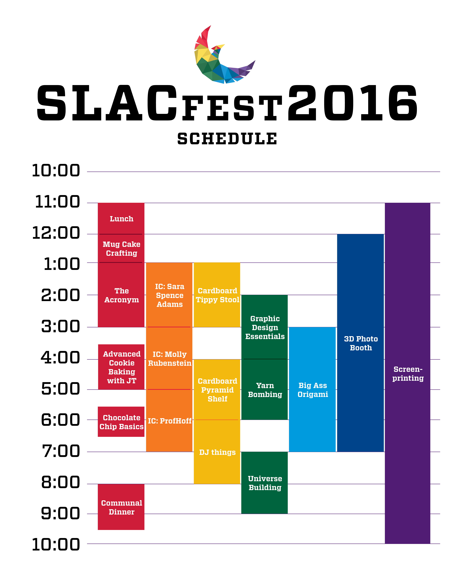
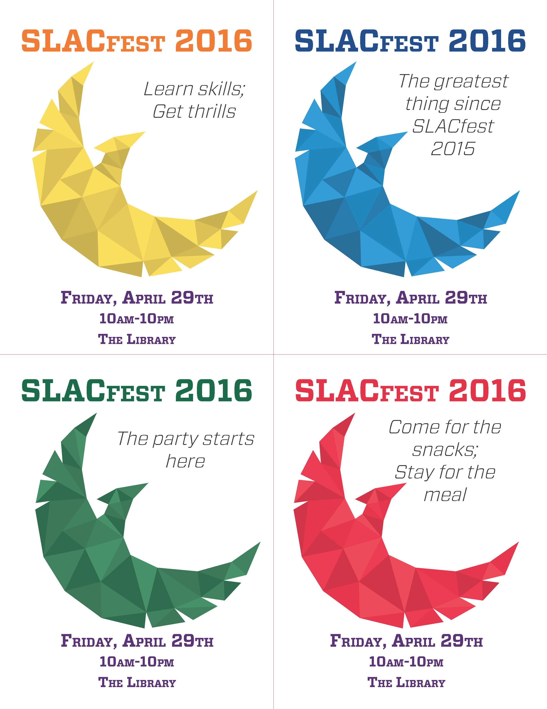
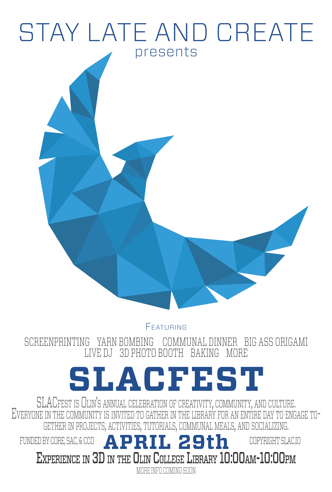

Stay Late and Create (SLAC) creates a collaborative space and environment to foster Olin’s project-based culture.
SLAC hosts weekly gatherings in Olin’s library, building community around tutorials, workshops, and group project meetings. In this collaborative environment, students also have the opportunity to connect with and learn from peers. In addition, we put on an annual festival of creativity, SLACFest, which is an all-day event that brings students together in the spirit of creation. Students, faculty, and alumni come together to engage in activities ranging from knitting and communal cooking to robbotics and 3D printing.
I'm a part of the small leadership team, which works to communicate with current students, alumni, and outside sponsors to create exciting tutorials and opportunities for students to learn and create.
SLAC also holds a yearly 'festival of creativity' called SLACfest. SLACfest is an all-day event that showcases the best of Olin's creativity, featuring tutorials and workshops throughout the day along with home cooked meals by Olin students, interaction with professors and staff, and more! I was in charge of marketing for SLACfest, including a branding campaign, flyers, posters, and more!
